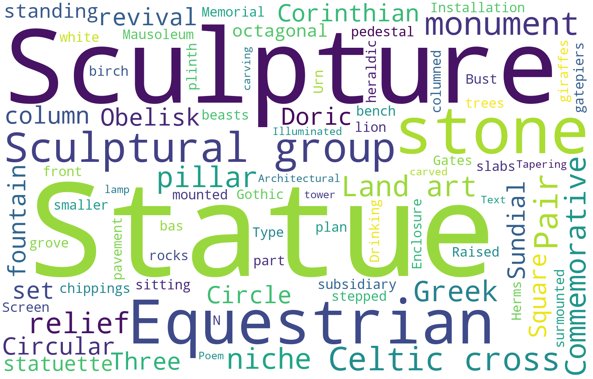

General
Year of Art Distribution
Most appearance of arts’ year is 1900-2000(40.1%), followed by 1800-1900 with the figure of 30.3. Next came to 2000s with 28.3%. The year smaller than 1800 is the least with 1.3%.
The amount of Arts
1900-2000 obtained the most the amount of newly appearance public arts while the year smaller than 1800 had the smallest number.
The number of newly established public arts increased with each century.
Location Distribution
The location of arts in Edinburgh is mainly with longitude of 3.2 and latitude of 55.95.
And they mainly concentrated in City Centre.
Arts Heatmap
Use different colours to show the distribution of Arts.
Arts Position
Arts’ positions are marked on the Map. Click the position point to see the art details.
Public Art Type

Main type for public art in Edinburgh is Statue and Sculpture.